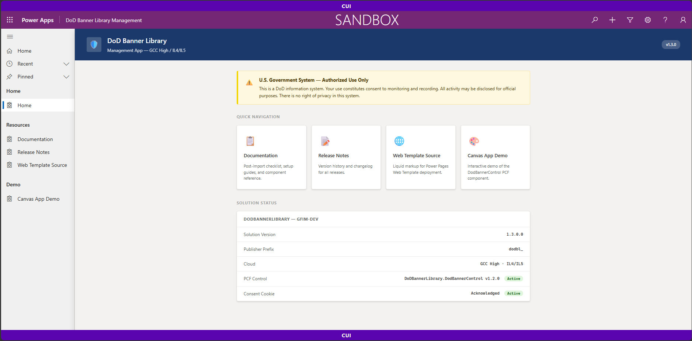
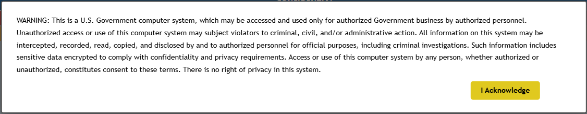
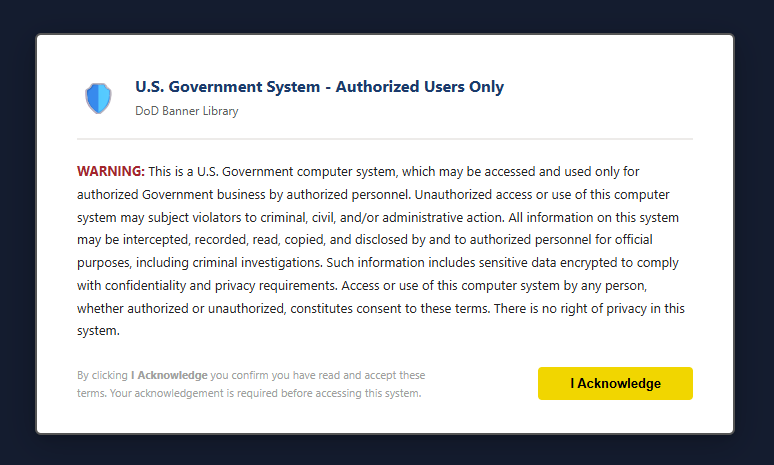
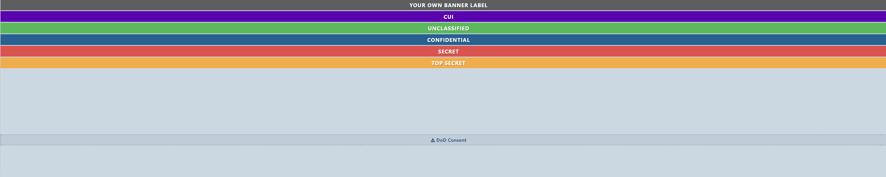

Power Pages
Use dodbl_dodconsentbanner, dodbl_bannercore, and the shipped web template source to create site-specific portal web files without packaging a website record.
Power Platform banner assets • v1.3.0 current release
A managed solution for reusable CUI/classification bars and optional DoD system-use notification experiences across Power Pages, Canvas Apps, and Model-Driven Apps. Built with vanilla JavaScript and CSS: no CDN, no jQuery, no external runtime dependencies.
The DoD Banner Library packages common banner patterns once so makers can apply consistent visual classification markings and optional acknowledgement experiences in Power Platform apps.
Use dodbl_dodconsentbanner, dodbl_bannercore, and the shipped web template source to create site-specific portal web files without packaging a website record.
Register dodbl_dodbanner as a form OnLoad handler or use the management app launch page for a consent entry experience.
Add the DoDBannerLibrary.DodBannerControl PCF control to render self-contained classification bars and consent UI in Canvas Apps and custom pages.
These bars are rendered as real HTML and CSS using the same data-classification pattern and authoritative colors from banner-core.css.
Focused components, governed defaults, and self-contained web resources keep the integration path understandable.
Power Pages web resources, Model-Driven App JavaScript, and a Canvas PCF control cover common Power Platform hosting models.
MDA behavior is controlled through dodbl_ variables for enablement, banner type, consent text, expiry days, and placement.
Distributed as DoDBannerLibrary with publisher prefix dodbl_, making import and update behavior clear for admins.
The PCF bundle injects its own required CSS at runtime; Power Pages uses checked-in CSS and HTML assets. No external fonts or scripts.
High-contrast bars, semantic content, keyboard focus styles, and clear tables make the documentation site useful across device sizes.
v1.4.0 work adds dodbl_consentrecord audit rows and a least-privilege consent-write role for supported acknowledgement paths.
Representative examples from the repository documentation assets.




Condensed from the repository README. Use your normal Power Platform deployment governance and review the technical integration guide before production rollout.
Import DoDBannerLibrary_managed.zip in the maker portal or with PAC CLI:
pac solution import --path DoDBannerLibrary_managed.zip --activate-pluginsOpen the DoD Banner Library Management app. Confirm Documentation, Release Notes, Web Template Source, and Canvas App Demo are available.
For Power Pages, create the site-specific web files and web template using the shipped source. For MDA/Canvas, configure environment variables or PCF properties for the target app.
Public-safe summary of the project wording. This library helps present system-use notification text and classification markings; it does not define or guarantee an adopter's authorization boundary.
Important: GCC High / DoD IL4/IL5 are intended deployment environments, not claimed certification, accreditation, ATO, or compliance status for this repository.
For AC-8, the expected posture for government tenants is that system-use notification is normally inherited at the tenant, workstation, or network logon boundary, such as Entra ID / Microsoft 365 sign-in or Windows logon banners. Each adopting organization must confirm that inheritance assumption with its AO, ISSM, or security personnel.
In-app consent in this library is optional supplementary hardening. Client-side acknowledgement can be bypassed through deep links, disabled JavaScript, browser developer tools, or direct API/OData access. Organizations needing enforced acknowledgement should use platform-level controls such as Conditional Access Terms-of-Use, security-role gating, or a gated entry app.